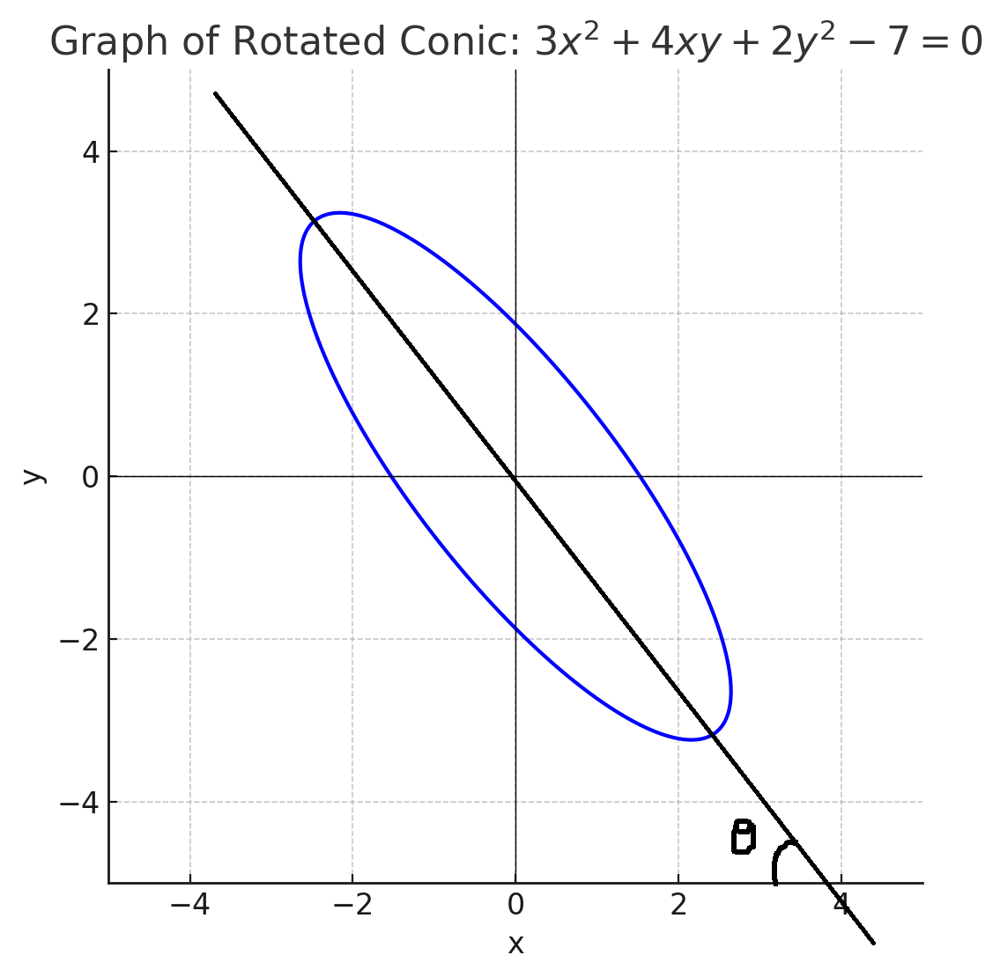

Ready to conquer those tricky second-degree conic equations? Here’s the lowdown:
Equation: Ax2 + Bxy + Cy2 + Dx + Ey + F = 0
Or in another form: ax2 + 2hxy + by2 + 2gx + 2fy + c = 0
Key stuff to know:
01. Pair of Straight Lines: If Δ = 0, where Δ = abc + 2fgh - af2 - bg2 - ch2
Or as a determinant:
02. Circle: If Δ ≠ 0, a = b, and h = 0
03. Parabola: If Δ ≠ 0 and h2 - ab = 0
04. Ellipse: If Δ ≠ 0 and h2 - ab < 0
05. Hyperbola: If Δ ≠ 0 and h2 - ab > 0
Got it? You’re now a conic detective! 🕵️♂️ Let’s move to some action!
Time to flex those brain muscles with some JEE-style questions! 💪
You get a second-degree equation, and your mission is to figure out what conic it is. Easy peasy, right?
Example:
Given: 2x2 + 3xy + 4y2 + 5x + 6y + 7 = 0
Task: Name that conic!
Use the analysis above to crack it. Piece of cake! 🍰
But hold up, the next type is where the real JEE magic happens!
Here, you get a conic equation, and you gotta hunt down its Focus, Directrix, and Latus Rectum. Ready for the challenge?
Example:
Given: x2 - 4xy + 4y2 - 32x + 4y + 16 = 0
Find: Conic type, Focus, Directrix, and Latus Rectum.
Check out this rotated ellipse in the graph below. It’s tilted at an angle θ with the negative X-axis:
To nail the Focus, Directrix, and Latus Rectum, follow these steps:
Let’s solve the example:
Given: x2 - 4xy + 4y2 - 32x + 4y + 16 = 0
a = 1, b = 4, h = -2, g = -16, f = 2, c = 16
Boom! You’ve just mastered conics like a JEE champ! 🚖 Ready for more?
Arjun, a JEE warrior, was stumped by a rotated conic question late at night. In his dream, he’s a parabola spinning wildly, yelling, “Why’s my axis tilted?!” A DoubtHaiJEE expert swoops in, chuckling, “Bro, just rotate that axis with tan(2θ)!” Arjun wakes up, submits his doubt on DoubtHaiJEE, gets a crisp solution, and walks into his mock test feeling like the king of conics! 😎